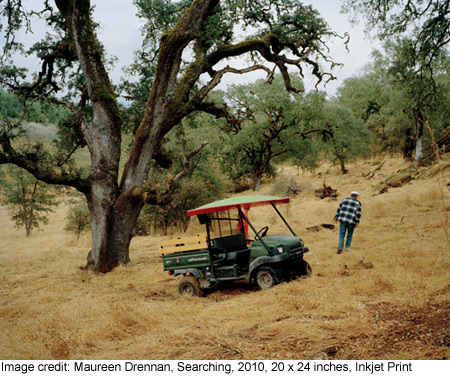

past exhibition | ||
Maureen Drennan
|
 The artist states:"This is body of work is a portrait of Ben, a marijuana grower in California. Although marijuana is legal to grow and use in California within strict guidelines, there are situations in which it is still illegal. It is not culturally acceptable to grow or sell despite the fact that it is a large part of the local economy. Every year Ben hires young men to help with the harvest season. They work for about one month and then he is alone again. The story I am communicating is not simply about pot growing, it is also about the experience of a socially isolated person and our relationship. American Literature, in particular Flannery O’Connor and Annie Proulx, have had a significant influence on my work. They depict flawed characters and anti-heroes for whom life is a constant struggle, yet have grace. In describing the landscape both writers evoke an ominously psychological and emotional sense of place in which the environment becomes a character unto itself and amplifies the aloneness of the characters." | |
exhibition archive |
|||
| 2016 | 2015 | 2014 | 2013 |
| 2011 | 2010 | 2009 | 2008 |